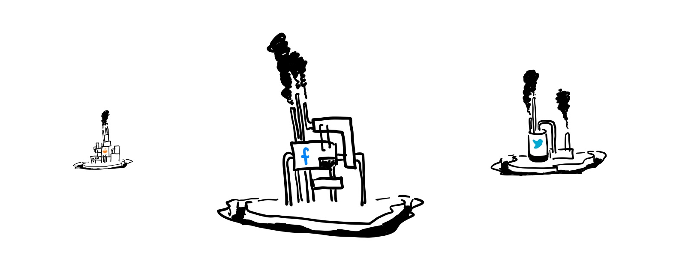
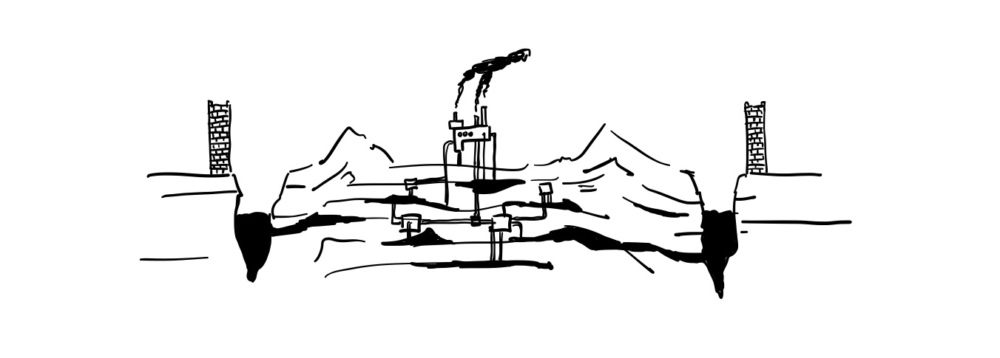

This essay was originally published in Reboot.
DISCLAIMER: To borrow words from Robin Sloan: While it is okay to share this link, I want to underscore that I am sending it specifically to you with the hope that you will really think about it! At such a primordial stage, a proposal like this doesn’t need diffuse, drive-by attention. It needs, instead, close consideration and generous imagination.
The competitive advantage of the vast majority of today’s centralized platforms are in their data moats and network effects. Services like Facebook, Twitter, and Reddit conceptually aren’t difficult to replicate — in fact, your average computer science graduate could probably recreate the functionality of these apps without much difficulty. Rather, the major reason why these platforms remain so dominant is because of their data and users: Facebook has all of our childhood friends, Twitter is the go-to place for unhinged humour and political discourse, and Reddit has millions of niche micro-communities found nowhere else on the internet.
These platforms, especially aggregators, are incentivized to resist decentralization and interoperability. After all, ‘data is the new oil’. These services almost entirely depend on making sure that only they have access to that valuable data. Interoperability, on the other hand, means you no longer have a data moat, or a privileged hub position in the network.

As a result, apps have become inseparable from data. They are extractive, asking for ever-increasing access to our personal lives. We willingly sign over the ability to control our data, blindly scrolling miles and miles of Terms of Service Agreements because we know that at the end of the day, we have no power to change what they want from us. You can’t choose what parts you like; you either use the platform and sign all of your rights to them, or don’t use it at all. Privacy and security in this world mostly means “which company do you trust with your safety?” The answer often is the one with the largest walls and deepest moats.

Clearly, this leaves much to be desired. We spend so much time online that it is worthwhile to explore better ways of existing online.
An Ideal World
Decentralization is not the solution for everything but it has value in empowering people to act decisively within their social contexts1. Decentralizing the Web means that people gain the ability to store their data wherever they want while still getting the services they need. Decentralization is about agency: we get choice about where we store our data, who we give access to which parts of that data, which services we want on top of it, and how we pay for those.
In an ideal world, instead of being forced to accept package deals we cannot customize, we get modular interoperable local-first software2 which we can stack to a global scale. Apps and platforms in this model follow the Unix philosophy: expect the output of every program to become the input to another, as yet unknown, program. Like the Lego “dot” that is the universal connector between all Lego pieces, there exists a universal API that freely enables all software of this model to freely interoperate. With a universal API, each composition between each tool increases the total possible compositions and workflows by , all without developers needing to write the transformations between each one.
In an ideal world, there is data-neutrality. Much like how the Net Neutrality debate strives to maintain the separation of the content and connectivity markets, data neutrality strives to maintain the separation of data and application markets. Our current market is competitive based on data ownership when it could be competitive based on service quality instead. If we conceive a decentralized approach as a way to enable data and platform neutrality, application platforms and data providers can mix and match, much like how you can browse the many websites of the web on any Internet provider.
In an ideal world, we focus on local-first software that works independently of large platforms — at the end of the day platforms should be used to support efficiency of collaboration at scale, not to gate users from moving their data for the sake of retention.
Peer-to-peer
Peer-to-peer technology has existed for a while and in theory, gets quite close to realizing this ideal world on its own. Federated open source software means anyone can run their own local instances and customize them to their liking. Organizations like the IETF and W3C work on standardizing open data formats to act as universal formats to store and convert between. Yet, most platforms do the minimum they need as required by law to maintain interoperability and data-neutrality.
So why does it fall short?
1. Running your own infrastructure
Even nerds do not want to run their own servers at this point. Even organizations building software full time do not want to run their own servers at this point. If there’s one thing I hope we’ve learned about the world, it’s that people do not want to run their own servers.
Moxie in My first impressions of Web33
Running your own infrastructure and servers is hard. Maintenance and upkeep of your software is hard. There is a reason that companies which offered to do that for others were so successful.
If one company figured out a good way to do , it was incentivized to offer doing as a service (hence the explosion of SAAS startups) instead of making it easy for competitors to do the same. Overtime, companies specialized at getting really good at doing and thus became known as the go-to people for that thing. This centralization-over-time of this knowledge leads to the monopolies that we see today.
Centralizing this knowledge in open standards and public, forkable code rather than data moats and proprietary technology is a great start but it isn’t enough if the general public doesn’t know how to use it. Just as you wouldn’t expect the average home owner to setup their internet connection, we shouldn’t expect the average person to run their own infrastructure.
It should be easy for people to create competing yet interoperable platform providers and it should be easy for people to switch between platform providers as one can switch between internet providers today.
2. Data availability and durability
The vast majority of peer-to-peer applications have yet to solve the data availability problem. In short, all connections are ephemeral — there is no persistent state. Imagine if everybody you shared a Google Doc with had to be online at the same time everytime you wanted to edit it, or if all 3 billion users of Facebook all had to have the app open to even use it. Imagine if you had your Twitter account deleted every time you closed your browser window.
This means that asynchronous collaboration isn’t possible in most peer-to-peer apps. Platforms usually get around this by storing the state of a user on one of their many servers who make it available on your behalf but peer-to-peer apps do not have this luxury — most people do not have a device that is “always-on” like a server is.
3. Existing network effects
Migrating data off of existing platforms is extremely difficult as this is something large platforms are disincentivized from supporting. Even if there are ‘export’ tools on platforms, they are the worst they can be while still meeting GDPR Requirements. New platforms almost never have ‘import’ tools because each platform has their own data format and that format changes unpredictably. This creates a form of n-to-n problem where every app needs to know what the APIs of another app are to even begin to interoperate.
“But usually you don’t want a dead snapshot; you want to “use this data elsewhere”—which requires repeatedly exporting & reconciling.”
This means that, even if an alternative platform offers a better service, switching is often impossible.
The important question is: can applications on top of decentralized data behave the same way as centralized apps? Can we still aggregate information into feeds and present a cohesive user experience even if all of our friends’ data is stored in different places?
Why not use blockchains?
I admit that it is true that blockchain actually solves most of these problems. Blockchain approaches have great approaches to solving both identity and availability through a combination of wallet addresses and token incentive mechanisms. Yet, they solve it in a way that leaves much to be desired.
Blockchain causes a whole new set of problems that makes it quite cumbersome to build on top of it. Some of the core problems that I have personally seen include:
- Lack of ability to store large files on-chain in a cost-effective manner
- Massively reduced speed and efficiency (the global Ethereum computer operates at roughly the speed of a Raspberry Pi)
- High latency for transactions and finality (not to mention transaction + gas fees but I am assuming these will be negligible at some point down the line)
All of these make it incredibly unfeasible for data-intensive or real-time applications (e.g. file sharing, games, collaborative text editing) without aggressive application of blockchain scaling ideas. Of course, there are certain applications that benefit from the unique properties that blockchains possess (namely strong guarantees about consistency and message ordering among the presence of byzantine actors) that make it worthwhile for certain applications like cryptocurrencies, but for most applications these tradeoffs make it hard for end users to adopt.
Blockchain is suitable for a very small subset of use-cases. Is there a more general purpose technology that still addresses these main problems?
The personal cloud
Rhizome aims to be a data-persistence and identity layer for the distributed web. The goal of Rhizome is to enable data-neutrality by separating data from applications.
It is made up of two layers
- Root: a personal data pod that you own. Think iCloud or Dropbox but you have agency over how much storage you want, who has access to it, and what you want to do with it.
- Trunk: a framework for easily developing cohesive peer-to-peer applications on top of data from Root
As a whole, it forms the basis for a new model of the internet where first and foremost, people own their own data. This enables entirely new dimensions of computation and collaboration on the web.
- Single purpose apps backed by general-purpose data4. Apps in this new model are now just views on top of data rather than a tight coupling of data and logic. If two apps are views on the same data, any change to the underlying data will instantly update both apps.
- Applications ask for access rather than store their own data. Instead of maintaining a separate log-in for each app, you give apps permission to read or write specific parts of your data.
- Additionally, this means that existing platforms to relieve themselves of the impossible burden of being the steward of moderating what every person on their platform is doing.
- Local-first means interaction times are measured in microseconds not seconds, resulting in more responsive-feeling applications and no loading spinners.
- Two users can collaborate by simply ‘inviting’ another to temporarily synchronize a subset of their data. Developers no longer have to worry about building out separate infrastructure for live editing or collaboration.
- As there are separate markets for data and applications, it creates competition based on service quality rather than on data ownership.
With Rhizome, we get the convenience of a single centralized platform without the lack of agency that comes with it.
You can find more technical details in the proposal, and rough notes from my day-to-day in my research log.
I encourage you to imagine with me what a world like this could look like. I miss when we would dream of worlds to come, filled with exciting possibilities and hopeful futures. Think of this project as a skyhook: a dream about a future so that we may build towards it.
We live in capitalism, its power seems inescapable – but then, so did the divine right of kings. Any human power can be resisted and changed by human beings. Resistance and change often begin in art.
(Ursula K. Le Guin)
Q & A
This proposal has seen a lot of evolution. How does this current version differ from your initial proposal? What shaped your ideas?
The early proposal contained very lofty goals for the future but I don’t think it critically thought about how to get there or why people would want a future like it. It had very scattered technical ideas and lacked conviction in the vision.
I found it really odd that this type of technology has existed for a while but there were no widespread examples of usage. I spent about a month and a bit looking at retrospectives of peer-to-peer protocols and applications to get a good foundation for what’s been done and what hasn’t been done.
This literature review era led me to revise the proposal to go a lot more in-depth about the why of the research, placing heavier emphasis on adoption and why the average internet user should care. The internal metric I had was whether my Mom, who doesn’t work in technology and mostly uses the internet to look at articles, would be able to understand why what I was working on was important.
What’s something that surprised you in your work so far this summer?
People say independent research is a lonely journey. I disagree. I don’t think being independent means you need to do it alone. Rather, it means without being attached to any particular institution or label.
I’ve been very surprised at just the number of people who have been thought partners, collaborators, and supporters throughout the whole process.
Rhizome is very much in early stages right now from a research perspective. Let’s say the research phase fully succeeds — what do you think would come next? What would it take for this to shape how individuals interact with the internet?
I honestly don’t think the technical part or the research will be the hard part of this project! Getting people to build on top of it and to imagine possible futures using this technology is the hard part.
Building distributed systems and peer-to-peer tech shouldn’t require a PhD to do. I think a large part of the next step if research is successful is to build demo apps with real users to show what’s possible with it.
I want your average computer science student to be able to build apps for their friends and family using this. I want people to actively play with this new framework, this new mental model of computing, and then to build the apps they wish they could have themselves.